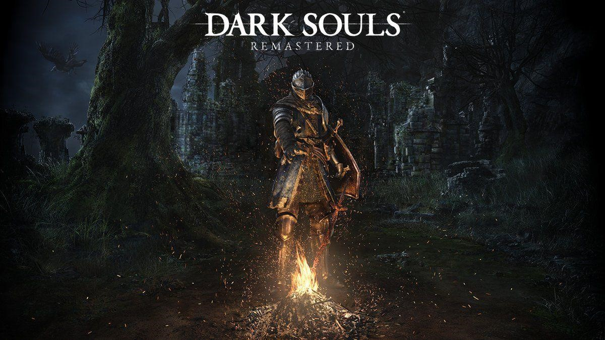

Inicio
A série Souls se consagrou como uma das sagas mais importantes da última geração, tornando-se um gênero próprio e influenciando diversos outros jogos. Receberemos em breve uma remasterização do primeiro jogo da franquia para todas as plataformas, então é a chance de quem ainda não conhece a série de começar bem.
Com um combate desafiador, um mundo que em hora nenhuma pega na sua mão e chefes que te desafiam ao limite, "Dark Souls" acabou ganhando fama de ter uma dificuldade elevada demais, o que acaba por espantar alguns jogadores iniciantes.
A bem da verdade é que o maior problema de "Dark Souls" para quem está começando, é sua longa curva de aprendizado e a falta de informações logo no início. Esse guia é feito exatamente para você que pensa iniciar nesse mundo, com dicas que ajudarão a progredir na aventura de forma menos desgastante e entender porque "Dark Souls" é um jogo tão fantástico.